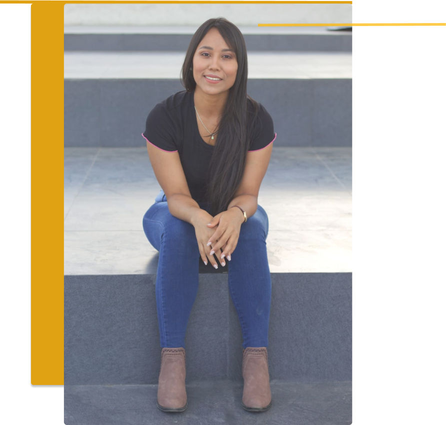

<section class="container-about">
    <article class="subcontainer-about">
        <!-- Contenedor de imagen -->
        <div class="container-img">
            
        </div>


        <div class="about">
            <!-- Contenedor de sobre mi -->
            <h1 class="title">Sobre mi</h1>
            <!-- Sub contenedor sobre mi -->
            <div>
                <p class="parraf">
                    Soy una desarrolladora especializada en el área de FrontEnd, Inicié esta aventura en el mundo del desarrollo y la tecnología hace poco mas de un año de forma autodidacta, y un poco después decidí estudiar en un bootcamp de programación donde desarrolle
                    mas de 10 proyectos en el área de desarrollo web, utilizando Angular, Typescript, Javascript, Html y Css. <br> Tengo experiencia en el manejo de versiones de proyectos mediante Git, así como metodologías ágiles
                    como Scrum.
                </p>
            </div>
        </div>
    </article>
</section>